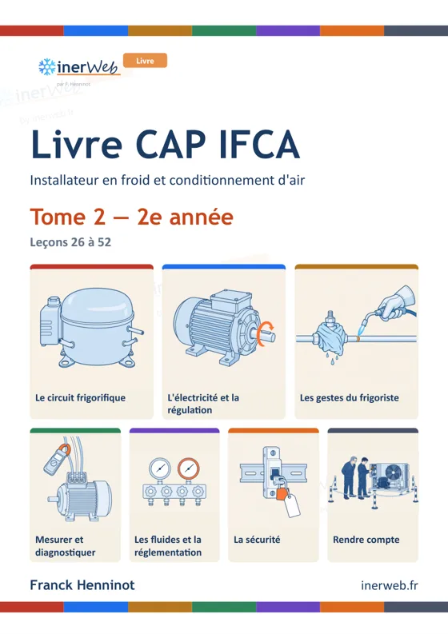
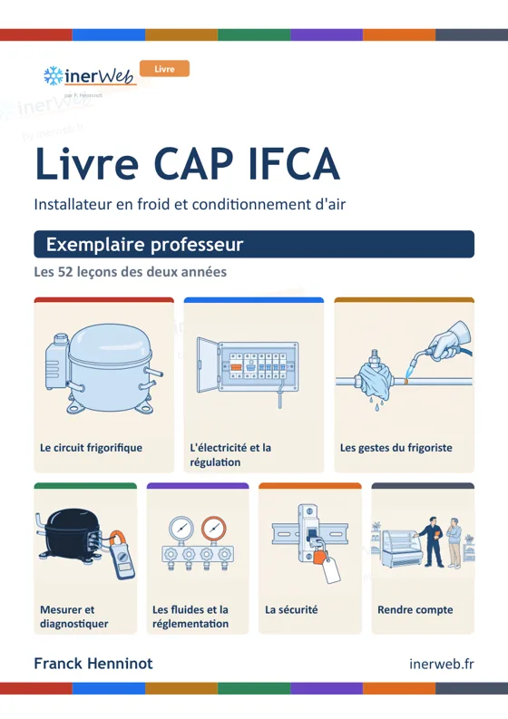
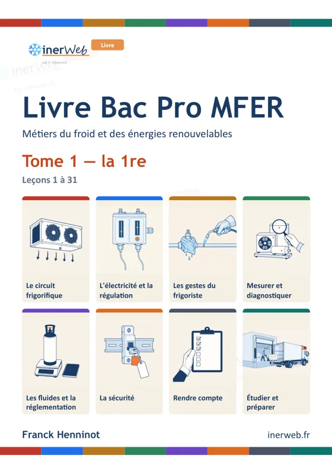
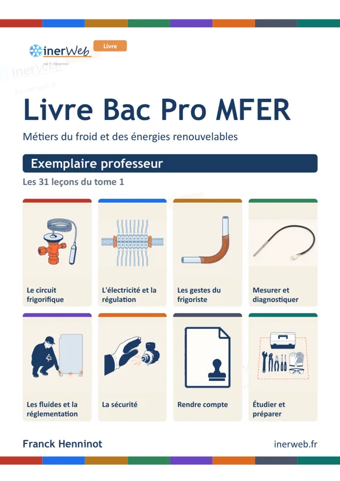

Livre CAP IFCA

Tome 1 — 1re année
leçons 1 à 25 · 206 pages
Tome 2 — 2e année
leçons 26 à 52 · 222 pages
Exemplaire professeur
corrigés, conduite de séance · 112 pages
Extrait du tome 1 : leçon 15, Surchauffe et sous-refroidissement (PDF, 12 p., 6,5 Mo) Extrait du tome 2 : leçon 30, Le pump-down (PDF, 12 p., 9,1 Mo)
Livre Bac Pro MFER

Tome 1 — la 1re
leçons 1 à 31 · 254 pages
Exemplaire professeur
corrigés, conduite de séance · 70 pages
Extrait du tome 1 : leçon 5, Le diagramme enthalpique (PDF, 12 p., 6,3 Mo)
Se procurer les livres
Vous enseignez
Pendant la phase bêta, le livre complet vous est confié gratuitement, en spécimen à votre nom. Vos retours de classe aideront à l'améliorer.
Demander un spécimenÉtablissement, CFA, centre de formation
Un exemplaire pour toute une équipe, avec l'exemplaire professeur et les leçons à projeter. Les conditions se fixent ensemble.
Écrire à l'auteurVous êtes élève
Votre professeur vous donne accès au livre. Les cours animés, les films et les simulateurs restent libres sur inerweb.fr.
Aller sur inerweb.frDroits réservés. Les extraits se lisent et se partagent tels quels, sans modification ni usage commercial. Le livre complet ne se diffuse pas : chaque exemplaire porte le nom de son destinataire. Le contenu technique vient de l'expérience et du métier de l'auteur, Franck Henninot ; la mise en page, les dessins et le code ont été fabriqués avec l'aide de l'intelligence artificielle : l'auteur a conçu, dirigé et vérifié.